author: niplav, created: 2020-03-24, modified: 2020-07-20, language: english, status: notes, importance: 6, confidence: possible
This text looks at the accuracy of forecasts in relation to the time between forecast and resolution, and asks three questions: First; is the accuracy higher between forecasts; Second; is the accuracy higher between questions; Third; is the accuracy higher within questions? These questions are analyzed using data from PredictionBook and Metaculus, the answers turn out to be no, no and yes. Possible reasons are discussed.
Above all, don’t ask what to believe—ask what to anticipate. Every question of belief should flow from a question of anticipation, and that question of anticipation should be the center of the inquiry. Every guess of belief should begin by flowing to a specific guess of anticipation, and should continue to pay rent in future anticipations. If a belief turns deadbeat, evict it.
– Eliezer Yudkowsky, “Making Beliefs Pay Rent (in Anticipated Experiences)“, 2007
Probabilistic forecasting that aggregates both qualitative and quantitative methods is a comparatively simple idea. Basically, one needs to have only very few tools at ones disposal to being ready to start forecasting:
The Brier score was invented in 1950, Bayes' theorem was first described in 1763, and probability theory was properly invented at the beginning of the 18th century.
However, attempting to use forecasting to seriously determine the probability of future events, training & selecting people for their forecasting ability and creating procedures that incorporate both intuition-based and model-based predictions have only been around since the mid 1980's, mostly popularized by the work of Philip Tetlock.
Since then, forecasting has slowly but surely matured from "X is going to happen because my intuition/divine revelation told me so" to "my probability distribution on the outcome of this random variable is an X distribution with the following parameters", or alternatively "I assign a probability of X% to this event".
However, since this kind of forecasting is relatively recent, information about the accuracy of long-range forecasting is basically non-existent:
- Long-range forecasts are often stated too imprecisely to be judged for accuracy. More
- Even if a forecast is stated precisely, it might be difficult to find the information needed to check the forecast for accuracy. More
- Degrees of confidence for long-range forecasts are rarely quantified. More
- In most cases, no comparison to a “baseline method” or “null model” is possible, which makes it difficult to assess how easy or difficult the original forecasts were. More
- Incentives for forecaster accuracy are usually unclear or weak. More
- Very few studies have been designed so as to allow confident inference about which factors contributed to forecasting accuracy. More
- It’s difficult to know how comparable past forecasting exercises are to the forecasting we do for grantmaking purposes, e.g. because the forecasts we make are of a different type, and because the forecasting training and methods we use are different. More
– Luke Muehlhauser, “How Feasible Is Long-range Forecasting?”, 2019
In this text, I will try to look at the accuracy of short-term and mid-term forecasting, which may shine some light on the relation between the range of forecasts and their accuracy in general. The range of a forecast is defined as the length of the timespan between the forecast and the resolution of the forecast. Keeping with Muehlhauser 2019, I will define short-term forecasts as forecasts with a range of less than a year, mid-range forecasts as forecasts with a range between 1 and 10 years, and long-term forecasts as forecasts with a range of more than 10 years (this distinction is not central to the following analysis, though).
Fortunately, for short- and mid-range forecasts, two easily accessible sources of forecasts and their resolutions are available online: The two forecasting websites PredictionBook and Metaculus.
To find out about the range of forecasts, I download, parse & analyse forecasting data from these sites.
PredictionBook and Metaculus are both forecasting focussed sites, though both are not prediction markets, but rather function on the base of merit and track records: although you don't win money by being right, you can still boast about it (although it seems questionable whether other people will be impressed). Besides that, these sites make it easier to train ones calibration on real-world questions and become less wrong in the process.
However, both sites differ in their approach to writing, judging and scoring forecasts. PredictionBook is much older than Metaculus: the former was first released in 2008, the latter started in 2015. It is also much less formal than Metaculus: it doesn't require stringent resolution criteria, making possible for everybody to judge a question (unrelated to whether the person has even made a prediction on the question themselves!), while Metaculus requires a short text explaining the context and resolution criteria for a question, with the questions being resolved by moderators or admins. This leads to Metaculus having less questions than PredictionBook, each question having more predictions on it. Of the two, Metaculus is much more feature-rich: It supports not only binary questions, but also range questions with probability distributions, comment threads, having closed questions (questions that haven't yet been resolved, but that can still be predicted on), three different kinds of scores (the Brier score, and a logarithmic scoring rule for discrete and continuous forecasts each), as well as the Metaculus prediction, a weighted aggregation of the forecasts of the best forecasters on the site.
Another significant difference between these two websites is the amount of data they publish: PredictionBook shows every single forecast made, while on Metaculus one can only see the community forecast (a the time-weighted median of the forecasts made on the question). This is relevant for this analysis: The two approaches must be analysed separately.
First of all, the data for both platforms needs to be made available in a reasonable format. This works nicer for Metaculus, and is a bit more difficult to achieve for PredictionBook.
The resulting data from Metaculus is here, for PredictionBook it's here.
The Metaculus data is relatively easy to obtain:
The forecasts are available on a JSON API at
https://www.metaculus.com/api2/questions/?page=. Fortunately,
gimpf has already published a collection of
scripts for fetching &
analysing Metaculus data, I reused their script fetch to download the
raw JSON. I then converted the distinct page objects in the generated
file to a list of questions:
$ cd /usr/local/src
$ git clone https://github.com/gimpf/metaculus-question-stats
$ cd metaculus-question-stats
$ ./fetch
$ z site
$ jq -s '[.]|flatten' </usr/local/src/metaculus/data-questions-raw.json >data/metaculus.json
The resulting data is available here.
I then wrote a python script to convert the JSON data to CSV in the form
id,questionrange,result,probability,range (id is a unique ID per
question, which will come in handy later), while also filtering out
yet unresolved questions and range questions. Here, id is a unique
numerical ID per question, which will come in handy later, questionrange
is the duration between the time for creating and resolving the question,
result is the result of the question (either 0 or 1), probability
is the probability given by the predictor $]0;1[$, and range is the
duration between the forecast and the resolution.
The script is not terribly interesting: It just reads in the JSON data, parses and traverses it, printing the CSV in the process.
Code:
#!/usr/bin/env python3
import json
import time
from time import mktime
f=open("../../data/metaculus.json")
jsondata=json.load(f)
for page in jsondata:
for question in page["results"]:
if question["possibilities"]["type"]=="binary" and (question["resolution"]==1 or question["resolution"]==0):
try:
restime=time.strptime(question["resolve_time"],"%Y-%m-%dT%H:%M:%S.%fZ")
except:
restime=time.strptime(question["resolve_time"],"%Y-%m-%dT%H:%M:%SZ")
try:
createtime=time.strptime(question["created_time"],"%Y-%m-%dT%H:%M:%S.%fZ")
except:
createtime=time.strptime(question["created_time"],"%Y-%m-%dT%H:%M:%SZ")
for pred in question["prediction_timeseries"]:
timediff=mktime(restime)-pred["t"]
qtimediff=mktime(restime)-mktime(createtime)
print("{},{},{},{},{}".format(question["id"], qtimediff, question["resolution"], pred["community_prediction"], timediff))
The resulting CSV file contains over 40k predictions.
As far as I know, PredictionBook doesn't publish the forecasting data over an API. However, all individual predictions are visible on the web, which means I had to parse the HTML itself using BeautifulSoup.
This time the code is more complex, but just slightly so: It starts at the first page of predictions, and loops down to the last one, every time iterating through the questions on that page.
It then loops through the predictions on each question and parses out the date for the prediction and the credence.
Every question on PredictionBook has two dates related to its resolution: the 'known on' date, for which the resolution was originally planned, and by which the result should be known, and the 'judged on' date, on which the resolution was actually made. I take the second date to avoid predictions with negative differences between prediction and resolution time.
Also, the 'known on' date has the CSS class date created_at, which
doesn't seem right.
The output of this script is in the same format as the one for Metaculus
data: id,questionrange,result,probability,range (although here
probability can also be 0 and 1, which Metaculus doesn't allow).
Code:
#!/usr/bin/env python2
import urllib2
import sys
import time
from bs4 import BeautifulSoup
from time import mktime
def showforecasts(linkp, res):
urlp="https://predictionbook.com{}".format(linkp)
reqp=urllib2.Request(urlp, headers={"User-Agent" : "Firefox"})
try:
conp=urllib2.urlopen(reqp, timeout=10)
except (urllib2.HTTPError, urllib2.URLError) as e:
return
datap=conp.read()
soupp=BeautifulSoup(datap, "html.parser")
timedata=soupp.find(lambda tag:tag.name=="p" and "Created by" in tag.text)
resolved=timedata.find("span", class_="judgement").find("span", class_="date created_at").get("title")
restime=time.strptime(resolved,"%Y-%m-%d %H:%M:%S UTC")
created=timedata.find("span", class_="date").get("title")
createtime=time.strptime(created,"%Y-%m-%d %H:%M:%S UTC")
responses=soupp.find_all("li", class_="response")
for r in responses:
forecasts=r.find_all("span", class_="confidence")
if forecasts!=[]:
est=float(r.find_all("span", class_="confidence")[0].text.strip("%"))/100
else:
continue
estimated=r.find("span", class_="date").get("title")
esttime=time.strptime(estimated,"%Y-%m-%d %H:%M:%S UTC")
print("{},{},{},{},{}".format(linkp.replace("/predictions/", ""), mktime(restime)-mktime(createtime), res, est, mktime(restime)-mktime(esttime)))
for page in range(1,400):
url="https://predictionbook.com/predictions/page/{}".format(page)
req=urllib2.Request(url, headers={"User-Agent" : "Firefox"})
try:
con=urllib2.urlopen(req)
except (urllib2.HTTPError, urllib2.URLError) as e:
continue
data=con.read()
soup=BeautifulSoup(data, "html.parser")
predright=soup.find_all("li", {"class": "prediction right"})
predwrong=soup.find_all("li", {"class": "prediction wrong"})
for pred in predright:
linkp=pred.span.a.get("href")
showforecasts(linkp, "1.0")
for pred in predwrong:
linkp=pred.span.a.get("href")
showforecasts(linkp, "0.0")
Surprisingly, both platforms had almost the same amount of individual predictions on binary resolved questions: ~48k for Metaculus, and ~44k for PredictionBook.
The first approach I took was to simply take the probability, result and range for all forecasts made, sort these forecasts into buckets by range (e.g. one bucket for all forecasts made 1 day before their resolution (and their results), one bucket for all forecasts made 2 days before their resolution, and so on). I then calculated the Brier score for each of these buckets, and then checked what the relation between brier score and range (the time between forecast & resolution) was (correlation & linear regression).
Now that the two datasets are available, they can be properly analyzed.
First, the raw data is loaded from the two CSV files and then the ID is
converted to integer, and the rest of the fields are converted to floats
(the range is a float for some Metaculus questions, and while the result
can only take on 0 or 1, using float there makes it easier to calculate
the brier score using mse.set):
.fc(.ic("../../data/pb.csv"));pbraw::csv.load()
.fc(.ic("../../data/met.csv"));metraw::csv.load()
pbdata::+flr({0<*|x};{(1:$*x),1.0:$'1_x}'pbraw)
metdata::+flr({0<*|x};{(1:$*x),1.0:$'1_x}'metraw)
To compare the accuracy between forecasts, one can't deal with individual forecasts, only with sets of forecasts and outcomes. Here, I organise the predictions into buckets according to range. The size of the buckets seems important: bigger buckets contain bigger datasets, but are also less granular. Also, should the size of buckets increase with increasing range (e.g. exponentially: the first bucket is for all predictions made one day or less before resolution, the second bucket for all predictions made 2-4 days before resolution, the third bucket for all predictions 4-8 days before resolution, and so on) or stay the same?
I decided to use evenly sized buckets, and test with varying sizes of one day, one week, one month (30 days) and one year (365 days).
spd::24*60*60
spw::7*spd
spm::30*spd
spy::365*spd
dpbdiffs::{_x%spd}pbdata@3
wpbdiffs::{_x%spw}'pbdata@3
mpbdiffs::{_x%spm}'pbdata@3
ypbdiffs::{_x%spy}'pbdata@3
dmetdiffs::{_x%spd}'metdata@3
wmetdiffs::{_x%spw}'metdata@3
mmetdiffs::{_x%spm}'metdata@3
ymetdiffs::{_x%spy}'metdata@3
The Brier Score is
a scoring rule for binary forecasts. It takes into account both
calibration and resolution by basically being the mean squared
error of forecast
($f_{t}$) and outcome ($o_{t}$):
In Klong, it's easy to implement (and also available through
the function mse.set):
brier::{mu((x-y)^2)}
Now, one can calculate the brier score for the forecasts and outcomes in each bucket (here I only show it for the days buckets, but it's similar for weeks, months and years):
pbress::pbdata@1
pbfcs::pbdata@2
dpbdg::=dpbdiffs
dpbdiffbrier::{(dpbdiffs@*x),brier(pbfcs@x;pbress@x)}'dpbdg
dpbdiffbrier::dpbdiffbrier@<*'dpbdiffbrier
metress::metdata@1
metfcs::metdata@2
dmetdg::=dmetdiffs
dmetdiffbrier::{(dmetdiffs@*x),brier(metfcs@x;metress@x)}'dmetdg
dmetdiffbrier::dmetdiffbrier@<*'dmetdiffbrier
Every diffbrier list contains lists with two elements, the first
one being the time between forecast and resolution, and the second
one being the brier score for all forecasts made in that time. For
example, ypbdiffbrier (the brier scores for all predictions made on
PredictionBook 1/2/.../10 years before resolution) is
[[0 0.162]
[1 0.168]
[2 0.164]
[3 0.159]
[4 0.13]
[5 0.12]
[6 0.128]
[7 0.147]
[8 0.121]
[9 0.215]
[10 0.297]]
(Brier scores truncated using {(*x),(_1000**|x)%1000}'ypbdiffbrier).
First, one can check how high the range of these two datasets really is. The PredictionBook forecasts with the highest range span 3730 days (more than 10 years), for Metaculus it's 1387 days (nearly 4 years).
One can now look at the correlation between range and Brier score first for Metaculus, and then for PredictionBook:
cor@+dmetdiffbrier
-0.209003553312708299
cor@+wmetdiffbrier
-0.255272030357598017
cor@+mmetdiffbrier
-0.304951730306590024
cor@+ymetdiffbrier
-0.545313822494739663
cor@+dpbdiffbrier
-0.0278634569332282397
cor@+wpbdiffbrier
0.0121150252846883416
cor@+mpbdiffbrier
0.0752110636215072744
cor@+ypbdiffbrier
0.411830122003081247
For Metaculus, the results are pretty astonishing: the correlation is negative for all four options, meaning that the higher the range of the question, the lower the Brier score (and therefore, the higher the accuracy)! And the correlation is extremly low either: -0.2 is quite formidable.
PredictionBook, on the other hand, is not as surprising: the correlations are mostly weak and indicate that accuracy doesn't change with range – a null result.
Visualizing the forecasts with scatterplots and linear regressions shows a very similar picture (red dots are for Metaculus forecasts, blue dots are for PredictionBook forecasts):
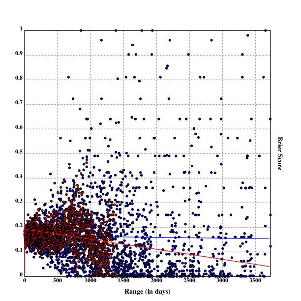
Scatterplot with linear regression for Metaculus & PredictionBook forecasts by range (in days)
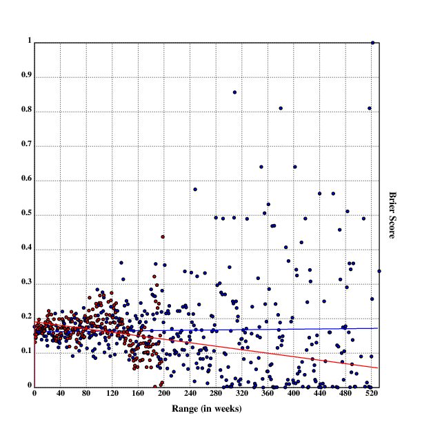
Scatterplot with linear regression for Metaculus & PredictionBook forecasts by range (in weeks)
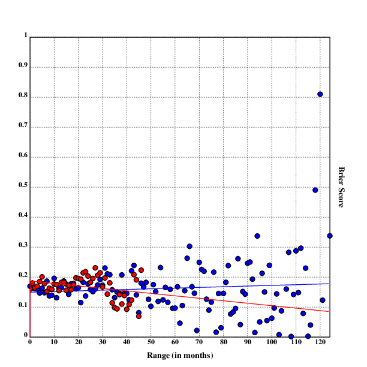
Scatterplot with linear regression for Metaculus & PredictionBook forecasts by range (in months)
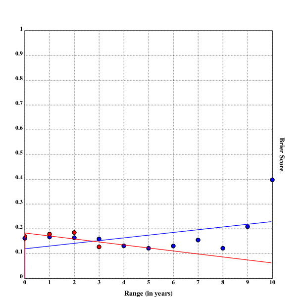
Scatterplot with linear regression for Metaculus & PredictionBook forecasts by range (in years)
The high amounts of noise are probably due to the low number of predictions for single days (or, in the case of weeks and months, for years/months with a high range, as not enough questions with this range have resolved yet).
I believe that this finding is quite surprising.
A priori, one would believe that beliefs about the near future are generally more accurate than beliefs about the far future: We can predict the weather in 2 minutes far better than the weather in 6 months, we can say much more about the position of a rock in an hour than in 100 years, more about the popularity of a political party in 2 months as opposed to 10 years. Even in reasonably chaotic systems, one should expect to become more and more accurate the closer one comes to the expected time.
Take, for example, a double pendulum: I am totally able to predict its position & velocity 100ms before resolution time, but 1s before and it's already getting more difficult. Information, like nearly everything else, has diminishing value, posteriors converge continuously towards truth.
So, what is the reason for this rather weird finding? Several possible reasons come to mind.
The most obvious solution is that the analysis above is absolute bogus and completely meaningless: It compares questions about global catastrophic risks to popular banana brands , very different kinds of questions with very different kinds of forecasts.
Here, one would assume that the longer-term questions asked are generally easier to predict, and that the effect goes away when one compares predictions among very similary questions (or, better, within questions).
Generally, the long-term questions we prefer asking seem to be more menable to forecasting than short-term questions: development of population sizes, the climate, especially the movement of interstellar bodies is much more thoroughly modelled than the development of markets, elections and the weather. This is of course only a weak trend, but one that could influence the questions (as will be investigated in this section).
Another question one might ask is: How big are the sample sizes at the tails when the range is high?
This is important: low sample sizes increase noise dramatically, and make findings much less reliable.
To get a rough overview over the sample sizes, on can look at the number of samples for each bucket. I generated charts for sample sizes for days, weeks, months and years, but I'll only show the chart for months (the others are quite similar):
mssplot::.oc("mss_plot.eps")
.tc(mssplot)
mmaxlen::(#mpbss)|#mmetss
mmaxval::|/*|+mpbss,mmetss
mmetssvals::(*|+mmetss),(mmaxlen-#mmetss):^0
mpbssvals::(*|+mpbss),(mmaxlen-#mpbss):^0
setrgb(0;0;0)
grid([0],mmaxlen,(mmaxlen:%20);[0],mmaxval,(mmaxval:%20))
xtitle("Range (in months)")
ytitle("Number of predictions")
setrgb(0;0;1)
segplot(mmetssvals)
setrgb(1;0;0)
segplot(mpbssvals)
draw()
.fl()
.cc(mssplot)
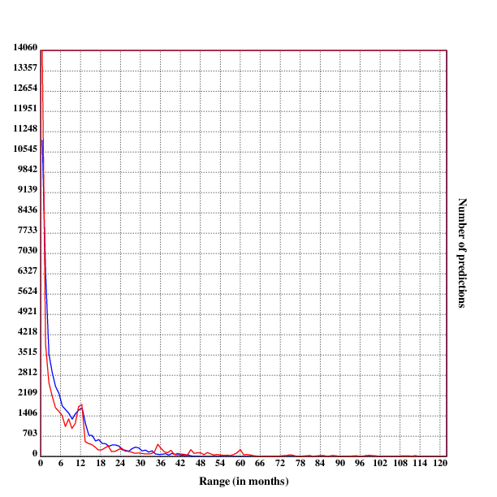
Sample sizes for predictions with a range of n months, sorted and graphed.
The red bars stand for Metaculus sample sizes, the blue bars stand for PredictionBook sample sizes.
As one can see, the sample sizes have a drastical skew towards recent predictions, not surprising for relatively young platforms (although 10 years for PredictionBook is sizable by internet standards, it's not that much compared to the range of some predictions on the platform).
This can be seen in the data as well: More than 77% percent of Metaculus predictions and 75% of PredictionBook questions have a range of less than one year:
ypbss::{(ypbdiffs@*x),#x}'ypbdg
ypbss::ypbss@<ypbss
ymetss::{(ymetdiffs@*x),#x}'ymetdg
ymetss::ymetss@<ymetss
ymetss
[[0 34487] [1 7129] [2 2182] [3 507]]
ypbss
[[0 29724] [1 4257] [2 1966] [3 1491] [4 909] [5 374] [6 287] [7 155] [8 143] [9 107] [10 6]]
34487%(34487+7129+2182+507)
0.77839972915020878
29724%(+/*|+ypbss)
0.754052614221568279
I hope that the dataset becomes richer the older these platforms become.
For days the skew is not as strong for Metaculus (moreso for PredictionBook), but still relevant:
10#dmetss
[[0 406] [1 543] [2 633] [3 464] [4 546] [5 477] [6 440] [7 307] [8 240] [9 297]]
10#dpbss
[[0 3267] [1 1142] [2 754] [3 611] [4 625] [5 426] [6 507] [7 440] [8 283] [9 246]]
Because in the linear regression all datapoints are weighted equally, it could very well be that a tiny bit of noise at the tails dominates the entire regression.
Another way to determine at the relation between forecasting accuracy and range is to look at the range of questions and not of individual forecasts.
In this case, this means taking the forecasts on all questions with a given range, and calculating the brier score on these forecasts, sorting them into buckets related to range.
The range of a question is determined by taking the time difference between the opening time (the time when the first prediction on the question could have been made) and the resolution time. One could imagine other metrics to determine the range of a question: the mean range for forecasts of that question, the median range for forecasts on that question, time differences between writing/opening and closing/resolution times of the question, and probably many more.
Here, the range of a question was set to the time difference between opening time and resolution time. The reasons for this were threefold:
First, I had no clear idea about the time when people were making forecasts on questions. Are most of the forecasts made just after opening, or just before closing? Or is the distribution uniform on the time between opening and closing? And are these distributions different on long-range as opposed to short-range questions? Also, I was unsure whether taking the mean time for forecasts would just be the same as comparing forecasts directly. So taking the median or the mean of the forecasts made was less preferable.
Second, what I cared about here was the uncertainty of questions at time of writing, not at time of prediction. This is much better tracked by opening time than by proxy on the forecasts.
Third, there was the question of data availability. Both Metaculus and PredictionBook publish opening/resolution times, but PredictionBook has no clear distinction between closing and resolution time (there is, however, a distinction between effective resolution time and planned resolution time ("When was the question resolved?" vs. "When should the question have been resolved?")).
First, the dataset grouped by forecasts had to be grouped by the question ID, in both cases a positive integer. The resulting datastructure should have the structure
[[id open-resolve-timediff [outcomes] [forecasts] [forecast-resolve-timediffs]]*]`
where the splat just indicates the inner list can be repeated. This was achieved by first finding the grouping of forecasts by question ID, then concatenating the ID, the question range, the list of outcomes, the list of forecasts and the list of forecast ranges:
metquestions::{(*x@0),(*x@1),2_x}'+'(+metdata)@=*metdata
pbquestions::{(*x@0),(*x@1),2_x}'+'(+pbdata)@=*pbdata
Strictly speaking, the outcomes could be a single element, since for every question there is only one well-defined outcome, but this makes it easier to later compute the brier score. Showcase:
metquestions@10
[474 497590.0 [0.0 0.0 0.0 0.0 0.0 0.0 0.0 0.0 0.0 0.0 0.0 0.0] [0.79 0.8 0.99 0.8 0.8 0.65 0.65 0.8 0.8 0.81 0.81 0.7] [249575.65223908424 249548.86438822746 245775.7940876484 242420.23024630547 230434.71577501297 230276.97260832787 230111.41609930992 229967.06126213074 216594.73318576813 207687.5192539692 177898.677213192 151590.6441845894]]
The next step involves merging the forecasts on questions with the
same range (rounded by day/week/month/year). This was achieved by first
dividing the question range by spd/spw/spm/spy, then grouping
the questions by the resulting rounded range. Afterwards, questions
ID and forecast range were dropped and the forecast and result arrays
were concatenated in order. The resulting array had the structure
[[question-range [results] [forecasts]]*]. Aftewards, computing the
brier score was quite straightforward by selectively applying it in a
mapped function. The resulting array was sorted by range, for convenience.
dmetquestions::{(_(x@1)%spd),x@[2 3]}'metquestions
dmetquestions::{(**x),,/'+{1_x}'x}'dmetquestions@=*'dmetquestions
dqmetbrier::{(*x),brier@1_x}'dmetquestions
dqmetbrier::dqmetbrier@<dqmetbrier
dqmetbrier@19
[20 0.210210798122065727]
This was of course implemented for both datasets and for all four kinds of buckets.
Again I use linear regressions, correlation coefficients and scatter plots to inadequately analyze the data.
For accuracy between questions, the results were mostly not very interesting:
cor@dqmetbrier
-0.021357561237633882
cor@+wqmetbrier
-0.0564522173076630489
cor@+mqmetbrier
-0.134945120480158162
cor@+yqmetbrier
-0.459895122605089935
cor@+dqpbbrier
0.00977369255430785951
cor@+wqpbbrier
0.0350359685890036469
cor@+mqpbbrier
0.00195160822503737404
cor@+yqpbbrier
-0.542853871095691028
With a high resolution (looking at days and weeks, similarly months), the correlations are very near zero, probably just by noise. But the correlations for the range in years and across-question accuracy is ~-0.5 in both cases. This is curious, and I have no explanation of what exactly is going on. Perhaps this is just a random result in both cases, which works because the datasets are just too small (4 & 10 for Metaculus and PredictionBook, respectively)? Or is it picking up on a real effect only visible with ranges as high as years? I don't know.
And now: linear regressions and scatterplots!
The following are scatterplots with range on the X-axis and accuracy (calculated using the Brier score) on the Y-axis. Again, red dots/lines are for Metaculus data, and blue dots/lines are for PredictionBook data.
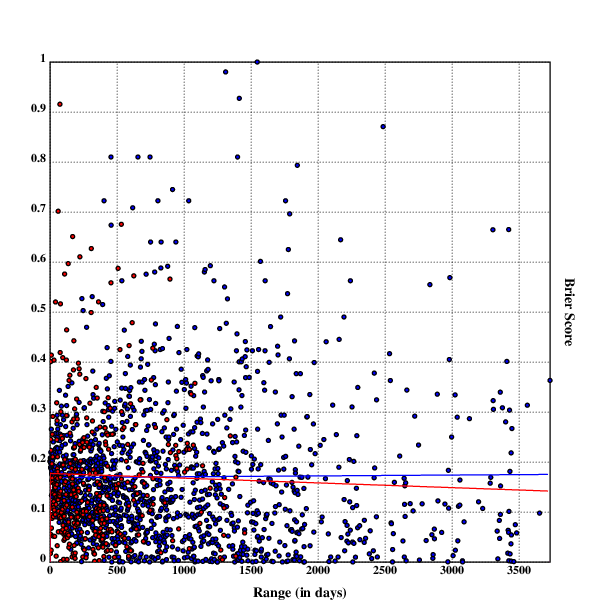
Scatterplot with linear regression for Metaculus & PredictionBook question accuracy by range (in days)
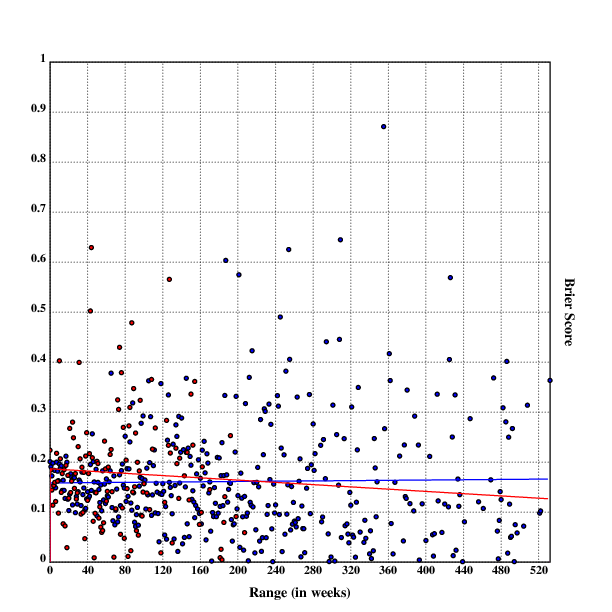
Scatterplot with linear regression for Metaculus & PredictionBook question accuracy by range (in weeks)
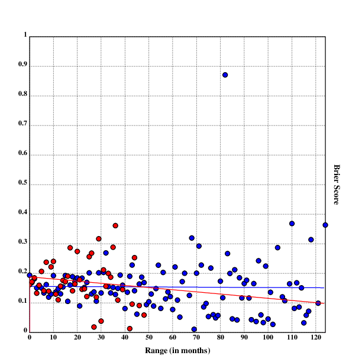
Scatterplot with linear regression for Metaculus & PredictionBook question accuracy by range (in months)
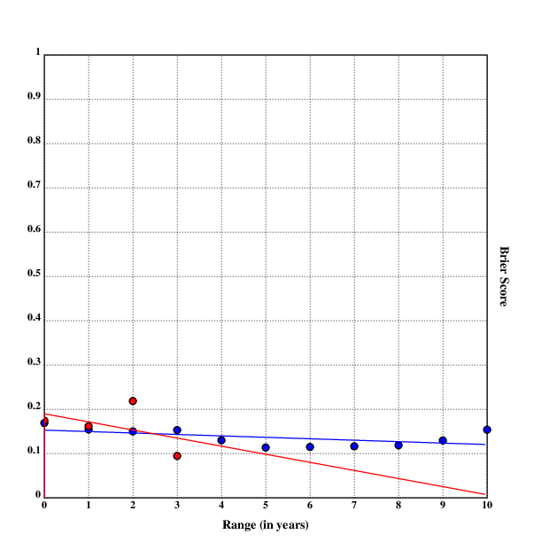
Scatterplot with linear regression for Metaculus & PredictionBook question accuracy by range (in years)
Note that these are indeed different from the results in the analysis on between-forecast accuracy. Especially, it seems like the linear regressions are less steep:
lreg(dmetdiffbrier)
[-0.0000372520623478135807 0.190620666721820704]
lreg(dqmetbrier)
[-0.00000947572947427605725 0.177148138436629167]
The general trend seems to be: questions with a higher range have a higher accuracy than questions with a lower range. In itself, this is already a fascinating finding, and might explain some of the effect seen with accuracy between forecasts in the previous section). On the other hand, the data is still very noisy, and the interpolation on PredictionBook data shows no relation at all for the four timespans, while having questions with a much higher range than Metaculus.
All in all, it's plausible that the relation of range and accuracy between questions explains the the weird relation for accuracy and range between forecasts, but I don't know enough statistics to tease these out exactly. My intuition tells me that the effect on accuracy between questions is too small to explain the whole anomaly between forecasts.
If there exists any bias in regard to what kinds of questions get asked in relation to their range, how can we correct for this bias?
One approach could be to compare very similar questions, such as only questions about artificial intelligence, the cost & speed of gene sequencing or autonomous cars, and examine the relation of range and accuracy within these categories. This might eliminate bias resulting from questions in different kinds of domains being easier or harder to forecast.
Here, I take a simpler approach. I examine the relation of range and accuracy within questions; are forecasts made on the same question later generally more accurate than forecasts made on a question earlier?
In order to do this, it seems like questions with higher numbers of forecasts on them are are more likely to give clearer results than questions with only a dozen or so forecasts. The Metaculus dataset contains predictions on 557 questions, the PredictionBook dataset 13356:
#metquestions
557
#pbquestions
13356
I filtered out questions with <100 predictions on them, resulting
in 323 questions from the Metaculus dataset and 0 (!) questions from
PredictionBook:
wmetq::flr({100<#x@2};metquestions)
wpbq::flr({100<#x@2};pbquestions)
#wmetq
323
#wpbq
0
This is not wholly surprising: Metaculus makes creating new questions much harder, and more strongly encourages users to predict on existing questions, with an elaborate tagging system for questions. PredictionBook on the other hand simplifies the questions creation process, leaving out moderation, complex resolution criteria etc. Still, I'm surprised – there must be at least one PredictionBook question popular enough for 100 forecasts! But apparently not.
So, what is the highest number of predictions a PredictionBook question has gotten?
pbl::{#x@2}'pbquestions
pbl::pbl@<pbl
|/pbl
99
You got to be kidding me.
Anyway, within the usable questions with >100 predictions, the
predictions of each question are first sorted by range (here time between
forecast and resolution) and then separated into chunks containing 50
predictions each, so that the resulting structure of cwmetq looks like this:
[
[
[[result_array] [50_earliest_predictions] [ranges]]
[[result_array] [50_next_predictions] [ranges]]
…
]
…
]
The code works by iterating the function sac over every question,
first sorting the values by range and then cutting the predictions into
chunks of size 50.
chl::50
sac::{t::+2_x;+'(chl*1+!(#t):%chl):_t}
chsmetq::sac'wmetq
When I first ran this code, I then also wanted to check how many chunks each question had:
#'chsmetq
[3 3 3 3 3 3 … 3 3 ]
The result was, to say the least, confusing – where did all those 3s come from‽ Surely, there are questions with more than 150 forecasts (which I knew, this question about 2016 being the warmest year on record has 765 forecasts)!
10#{#x@3}'metquestions
[101 101 94 60 101 61 101 101 101 68]
|/{#x@3}'metquestions
101
I initially suspected a bug in my code, but to my surprise, after further investigation, it turned out that the Metaculus API returns timeseries with elements removed so that the length was always 101.
I can think of two reasons to do this:
I mailed the support address on the site, asking for a full timeseries on resolved binary questions.
Now for each chunk of size 50 we can compute the brier score and the mean of the range, and subsequently convert the ranges from seconds to days:
pchsmetq::{+mu(*|x),brier@2#x}'x}'chsmetq
pchsmetq::{{((_*x):%(3600*24)),1_x}'x}'pchsmetq
The dataset then has elements like this:
2#pchsmetq
[[[294 0.036422] [72 0.015188] [1 0.0016]]
[[57 0.002532] [35 0.001462] [28 0.0004]]]
Each element contains the mean range of a chunk in days and the accuracy of the forecasts on that question within that chunk.
We can now compute the linear regression for the chunks in each question:
2#lreg'pchsmetq
[[0.00011329877152681667 0.0038764502832194274] [0.0000675414847161572049 -0.00123699272197962153]]
We can also visualise the linear regression for each question by setting it to zero outside the range of the oldest and newest chunks:
sketch::{q::x;
setrgb(.rn();.rn();.rn());
pltr::{:[(x>**q)|x<**|q;0;lr(x;lreg(q))]};
plot(pltr)}
sketch'pchsmetq
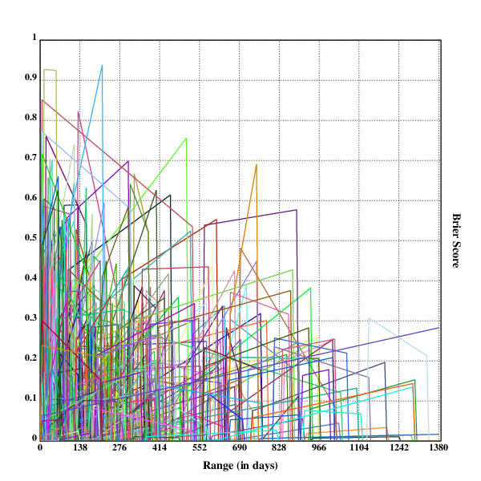
Linear regressions for the accuracy of questions by range in chunks of size 50.
The vertical bars are artifacts stemming from the fact that Klong attempts to makes the discontinuous function continuous, connecting 0 and the linear regression.
Although the plot is kind of cool to look at, I'm not really sure what it can tell us. My guess would be that it somewhat shows a trend with higher ranges responding to higher Brier scores (and therefore lower accuracy).
We can test whether this suspicion is acually correct by calculating the average offset and the average ascension – if the ascension is positive, our suspicion is confirmed.
mu'+lreg'pchsmetq
[0.00198030517003624986 0.0105472685809891273]
So it is true that accuracy within question generally is higher with lower range. Everything else would have been surprising.
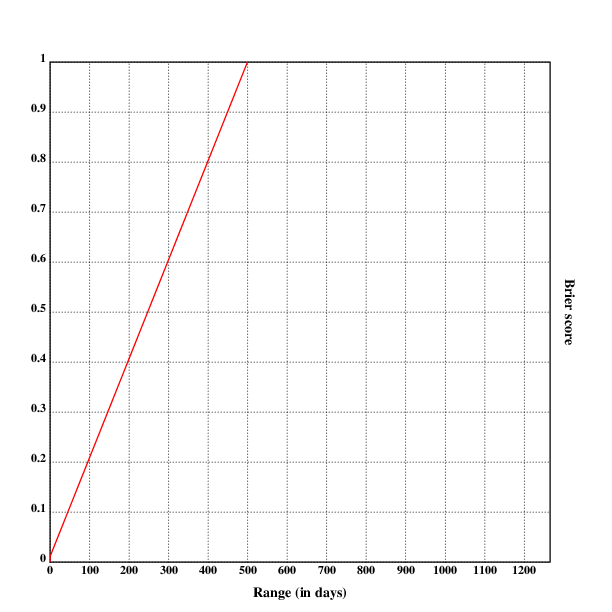
Mean of linear regressions on accuracy within questions.
Using two datasets with both ~45k predictions, having a range of between 1 day and 10 years (thereby containing forcasts with short and medium range)I have investigated the relation between the accuracy of predictions and their range (that is, the time between the prediction being made and the result of the prediction being known).
I have found that the data indicates three facts:
These results vary strongly between Metaculus and PredictionBook, with observations 1. and 2. much weaker or non-existent in PredictionPook data (observation 3. only holds for Metaculus, because there are no questions on PredictionBook with enough forecasts to run the analysis).
These results suggest what to expect with questions with even higher range: That later predictions on them will generally be more accurate, and that the kinds of questions asked with a very high range might have an even accuracy than questions with short and medium ranges.
However, there are plausible reasons to expect the trend from 1. and 2. to reverse: The questions asked with very high range are not very different from questions with medium range, and have a lot less information available to make useful predictions on them; butterfly effectsstart kicking in in systems that are relatively slow moving on human timescales (thus easier to predict on medium timescales), but nearly completely random at the scale of decades and/or centuries; the questions asked about longer timescales are of a different kind and much less predictable.
I hope to update this analysis in the future, when data from predictions with higher ranges has become available, and to check whether the findings in this analysis continue to be correct.
{kind=link}
{kind=link}
{kind=link}
{kind=link}